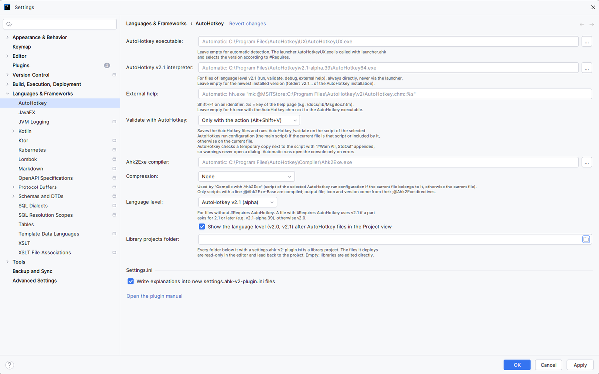

The plugin's settings are spread over the usual places of the IDE (File > Settings, Ctrl+Alt+S):
| Where | What | Applies to |
|---|---|---|
| Languages & Frameworks > AutoHotkey | AutoHotkey program, AutoHotkey v2.1 interpreter, external help, automatic validation, Ahk2Exe, compression, language level, library projects, explanations in new settings files | all projects |
| Editor > Color Scheme > AutoHotkey | colors | the color scheme |
| Editor > Code Style > AutoHotkey | indent, spaces, blank lines, tab Case | the code style scheme (IDE or project) |
| Editor > Live Templates > AutoHotkey | live templates | all projects |
| Editor > File and Code Templates | template AutoHotkey Script | IDE or project |
| Run > Edit Configurations | run configurations of type AutoHotkey | the project |

Empty fields mean "automatic"; the field then shows in grey what the plugin found. The settings apply to all projects.
The program used to run, validate and debug scripts. Leave it empty for automatic detection. The plugin looks in %ProgramW6432%, %ProgramFiles%, %ProgramFiles(x86)% and %LOCALAPPDATA%\Programs, each in the subfolder AutoHotkey, for
UX\AutoHotkeyUX.exe, which chooses the AutoHotkey version by the #Requires line of the script;v2\AutoHotkey.exe;AutoHotkey.exe.Enter a path if AutoHotkey is installed elsewhere, or to always use a particular interpreter, e.g. C:\Tools\AutoHotkey\v2\AutoHotkey64.exe. How the program is used:
launcher.ahk next to it, as the AutoHotkey documentation requires.#Requires AutoHotkey v2.0), the plugin starts the interpreter v2\AutoHotkey.exe directly (AutoHotkey32.exe/AutoHotkey64.exe for 32-bit/64-bit in the #Requires line). See Running scripts.Lib of the installation (AutoHotkey Lib) and AutoHotkey.chm for the external help are searched next to this program.The interpreter for files of language level v2.1 (see AutoHotkey v2.1 (alpha)): it runs, validates and debugs them, always directly, never via the launcher, and its AutoHotkey.chm is the external help for them. Leave it empty for the newest installed version 2.1 or later. The plugin looks in the installation folders named above (and in the folder of the launcher from the field above) for
v2.1-alpha.39, named by their version, with AutoHotkey64.exe or AutoHotkey32.exe; an alpha that was only unpacked there is found as well;UX\installed-files.csv.With 32-bit/64-bit in the #Requires line the plugin takes AutoHotkey32.exe/AutoHotkey64.exe from the same folder, also next to an entered path.
The command line for Shift+F1 on AutoHotkey topics. %s is replaced by the key of the help page, a path inside the AutoHotkey help, optionally with an anchor: /docs/lib/MsgBox.htm, /docs/lib/File.htm#Close. The line is split at spaces; quotes keep a part together. Leave it empty for
hh.exe "mk:@MSITStore:folder of AutoHotkey\AutoHotkey.chm::%s"
Pass the key to an own program or script, which may for example map it to a web address.
"C:\Program Files\AutoHotkey\v2\AutoHotkey.exe" "C:\Tools\OpenHelp.ahk" %s
The pages of the plugin itself (pragmas, this manual) always open in hh.exe with the plugin's own help file; this setting does not apply to them.
| Value | Meaning |
|---|---|
| Only with the action (Alt+Shift+V) | Default. The script is only validated when you start Validate with AutoHotkey. |
| Also after Reformat Code | Additionally after every Reformat Code of an AutoHotkey file. |
| Also when a file is saved | Additionally after every save of an AutoHotkey file, including the automatic saving of the IDE (e.g. when it loses focus). |
Automatic validations open the console only if AutoHotkey reports an error. Details in Validating with AutoHotkey.
Ahk2Exe compiler: path to Ahk2Exe.exe. Leave it empty for automatic detection: Compiler\Ahk2Exe.exe in the folder of the AutoHotkey program and its parent folder, then in the installation folders listed above.
Compression of the executable:
upx.exe must be in the folder of Ahk2Exe. Smaller files, but some virus scanners distrust compressed executables.Details in Compiling with Ahk2Exe.
The language level of files without #Requires AutoHotkey: AutoHotkey v2.0 (default) or AutoHotkey v2.1 (alpha). A file with #Requires AutoHotkey always uses the version it asks for (see AutoHotkey v2.1 (alpha)). After a change the open files are parsed and highlighted again.
Show the language level (v2.0, v2.1) after AutoHotkey files in the Project view (on by default) adds the level of each AutoHotkey file in grey after its name in the Project view.
The folder of the library projects (empty by default: libraries are edited directly in the library folder). Every folder below it with a settings.ahk-v2-plugin.ini is a library project. The files these projects deploy are read-only in the editor and lead back to their project, and File > New offers AutoHotkey Library Project...; see Library projects and Libraries. In settings.ahk-v2-plugin.ini the folder is the variable %LIBRARY_PROJECTS%.
On by default: a new settings file explains every option in comments. Off: new files are short. You can remove and restore the explanations in each file at any time; see Explanations.
The link at the bottom of the page opens this manual.
Editor > Color Scheme > AutoHotkey lists all colors of the plugin with a preview, in four groups: Core (Flow control, Reserved word, Reserved value, Directive, Number, String, Label, Comment), Declaration (Function, Class, Hotkey, Hotstring, Hotstring replacement text), Built-in elements (Function, Variable, Class, Method, Property) and Special (Escape sequence in string, Key in send text, Variable with declared type, Declared private member, Unchecked code line). Click a word in the preview to select its entry. Which word gets which color is explained in Editor.
Errors, warnings and the mark of a validation error use the general colors of the IDE (Editor > Color Scheme > General).
A run configuration of type AutoHotkey (Run > Edit Configurations, +, AutoHotkey) has these fields:
| Field | Meaning |
|---|---|
| Script | The script to run (the main script). Required. |
| Script parameters | Passed to the script (A_Args), separated by spaces; quotes keep a parameter with spaces together. |
| Working directory | Empty = folder of the script. Note that AutoHotkey v2 sets A_WorkingDir to the script folder at startup; this directory is available as A_InitialWorkingDir. |
| Compile with Ahk2Exe and run the executable | Off by default. Compiles the script first and runs the executable instead of the script (see Compile and run). |
| Run the executable in | Only with the option above: Terminal in the Run tool window or Separate console window. |
The configuration selected in the toolbar also decides which script is validated and compiled when the current file is its script or included by it.